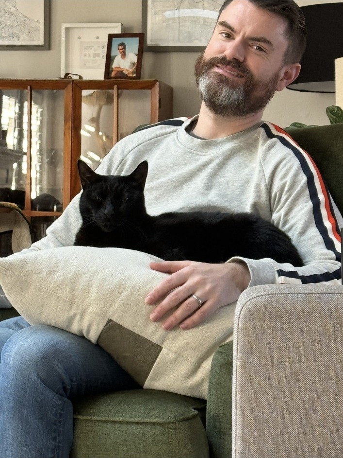
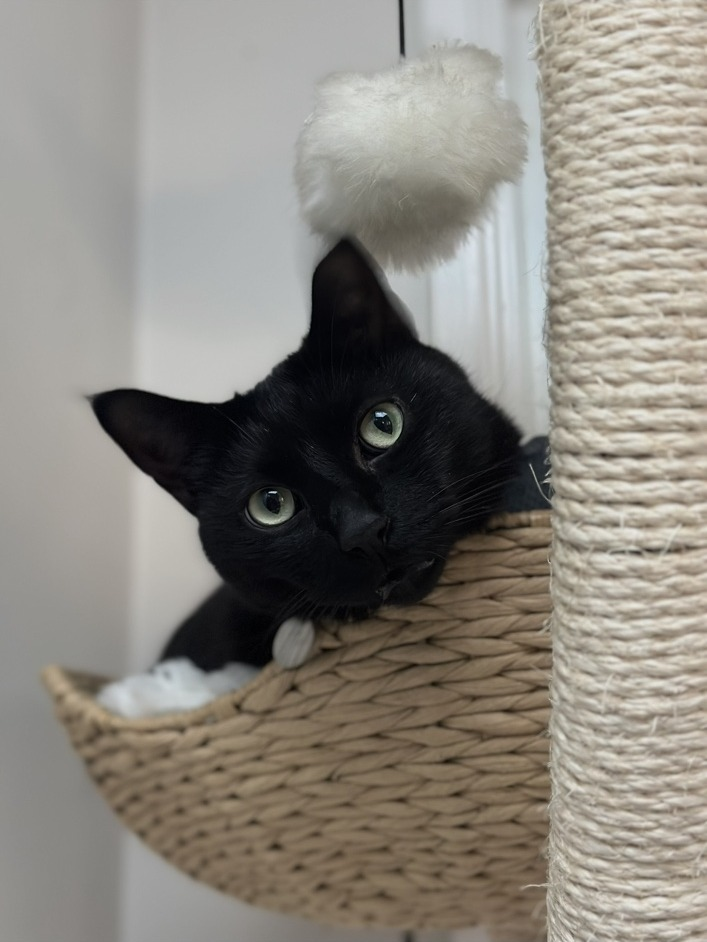
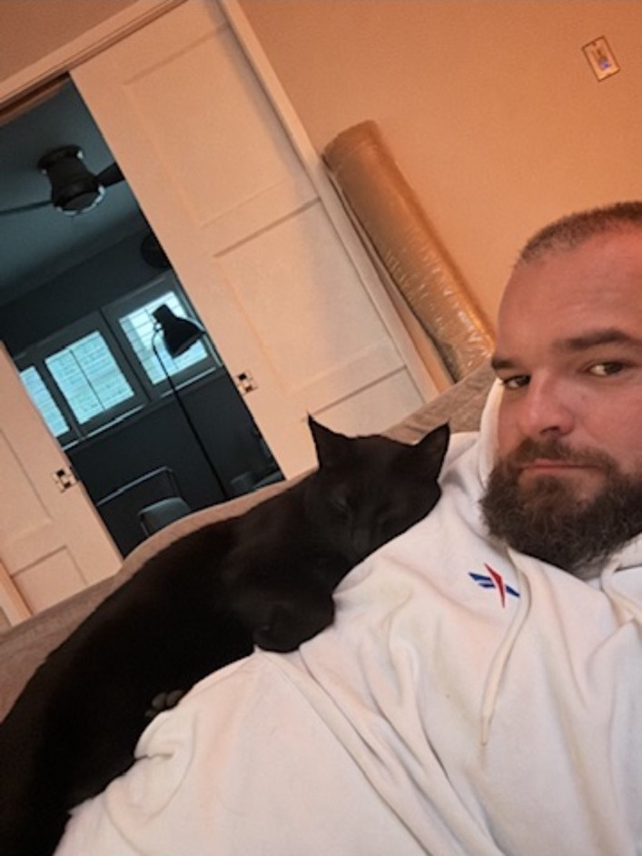

One of the most uncomfortable things I’ve ever admitted is that I grieved losing Bobby, my cat, more intensely than I grieved when my dad died.
That sounds awful, as though I am ranking two lives. I’m not. Grief just doesn’t care about the hierarchy we think it should follow.
The family we chose
I grew up surrounded by animals and always knew I needed one in my life. My work schedule was insane, and a cat seemed like the animal I could responsibly care for.
Johnny did not want a cat, so we reached the sort of balanced marital compromise on which successful relationships are built: we got a cat.
I went to a shelter in Los Angeles and brought home Bobby. Always adopt.
Johnny fell completely in love with him, and watching that happen made me love Johnny even more. Bobby returned the favour by loving Johnny considerably more than he loved me, despite the minor detail that I had saved him from the shelter system. There is very little gratitude in cats.
We had decided that children weren’t for us. Bobby wasn’t a substitute child, and I don’t pretend those experiences are equivalent. He was part of the family we chose to build, and loving him together changed our relationship.



Losing Bobby
Then Bobby was taken by coyotes.
It was sudden, brutal and completely outside our control. Our home changed overnight, and part of the little family we had deliberately built disappeared with him.
What I hadn’t understood until Bobby was gone was how important the love I received from him had been. It was the first time I had experienced love in such a completely uncomplicated and unconditional form. Human relationships are complex because humans are complex. Bobby didn’t care about my title or whether I was holding everything together. He just loved me.
Losing that broke me.
The pressure to look okay
At work, I was embarrassed to let anyone know that I wasn’t okay. The voice in my head was blunt: “It’s only a cat. Don’t let people see how much this is hurting you. You have to lead. You have to be okay.”
So I tried to look okay.
Being a leader did not make me less devastated. It only made me feel that I needed to be better at hiding it.
I loved my dad and grieved him differently. Losing Bobby hit me harder, and that brought another layer of guilt. Eventually, I understood that the intensity of grief is not a measure of love, loyalty or character. It is shaped by the relationship, the circumstances and the place that person or animal occupied in your life.
That experience changed how I think about leadership. People bring losses into work that they may feel embarrassed even to name. Some grief is recognized with leave, flowers and an accepted script. Other grief comes with the quiet expectation that they should pull themselves together because it was “only” an animal.
What support looks like
A leader’s responsibility is not to decide which losses deserve compassion. It is to create the conditions in which people can be honest about what they are carrying, without fearing that honesty will damage their reputation or career.
That can begin with a private check-in: “I’m sorry you’re dealing with this. You don’t need to share more than you want to, but is there anything that would make the next few weeks more manageable?” It may mean listening without minimizing, asking what support would help rather than assuming, and agreeing on practical adjustments such as moving a non-urgent deadline, narrowing priorities or arranging cover for a demanding meeting. It also means checking back later, because grief can affect concentration, energy, confidence and performance long after the immediate loss.
Support does not mean removing every responsibility or treating someone as incapable. It means responding with enough humanity and flexibility to help them remain connected to the work while they recover.
Sometimes that may involve time away. Sometimes it may mean a lighter workload, clearer priorities, fewer unnecessary meetings or written follow-up after important conversations. A leader might say, “Let’s identify the two things that matter most this week and revisit the rest next Monday,” or, “Would you prefer to keep this meeting, postpone it or have someone else attend?”
Sometimes the most useful support is simply the assurance that they do not have to pretend everything is fine.
If someone is broken by a loss, it is real whether or not it appears in the bereavement policy. We don’t need to understand why it hurts that much before deciding to be kind. The strongest leaders are not the ones who hide their humanity best; they are the ones who make room for everyone else’s—and take practical responsibility for helping people through difficult moments.
Policies may need definitions. Compassion doesn’t.
Explore more: Leadership & Identity or Being Irish in America.